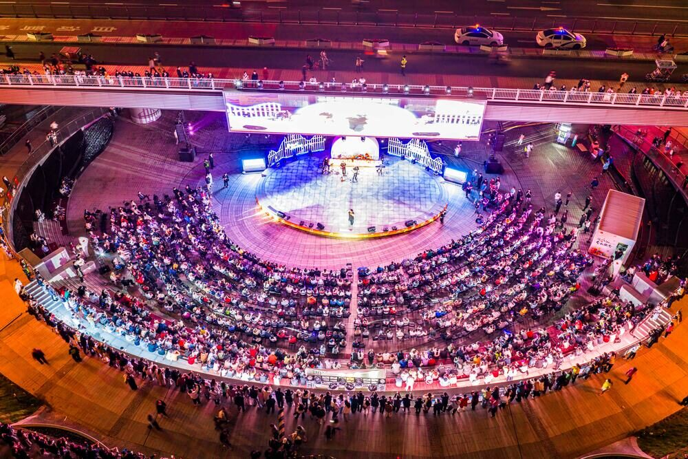
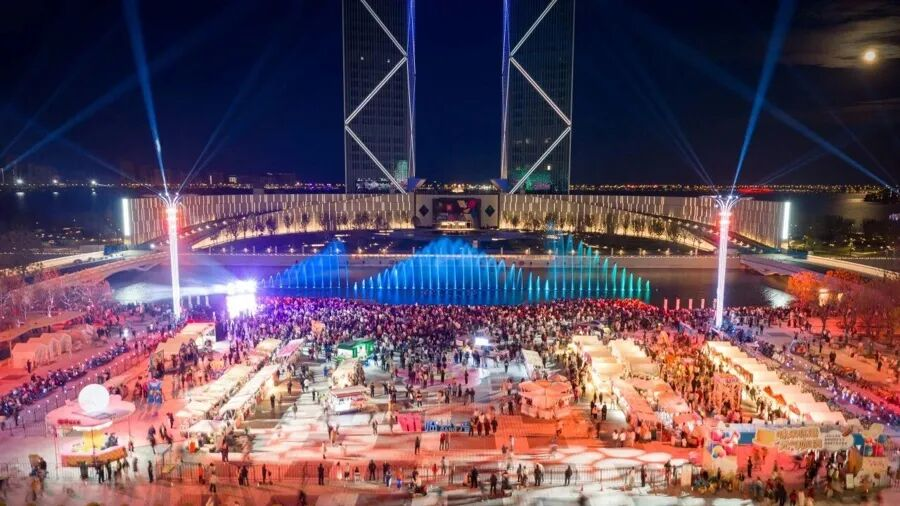
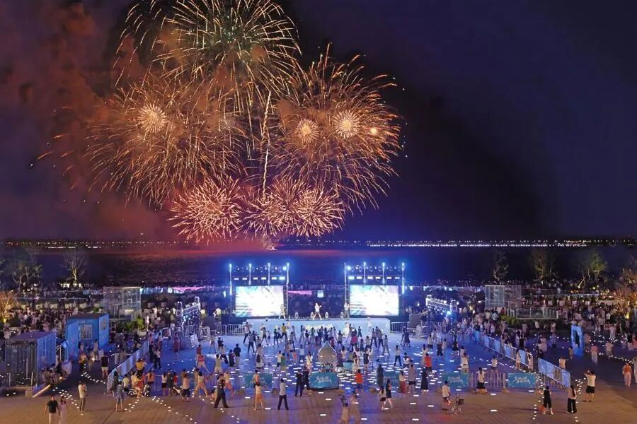
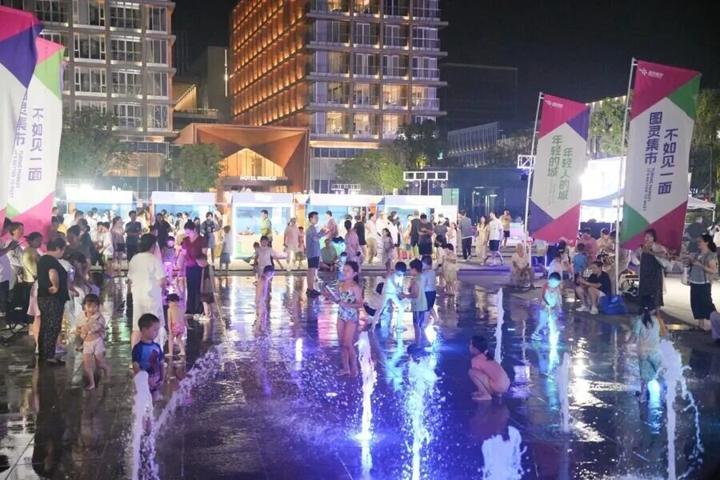
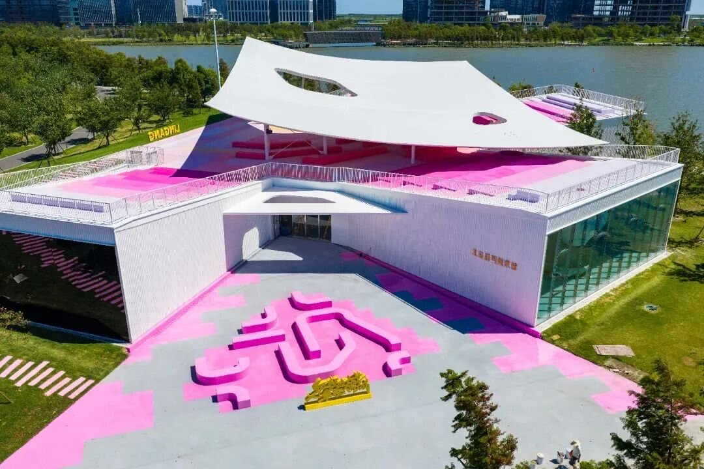

滴水湖下沉式广场的四季歌会。图源：临港新片区管委会
上周有朋友问我，周六去滴水湖，要不要提前做攻略。
我说不用。
那边的时间表是排好的。歌会、团操、音乐喷泉、无人机加烟花，一年到头轮着来，你只要在傍晚之前到，剩下的跟着人群走就行。
在滴水湖过周末，攻略确实是多余的东西。
— 01 —
先看课表
| 每周六 | 四季歌会、湖畔团操，白天到傍晚都有 |
| 每晚 | 庆典广场水幕音乐喷泉 |
| 周六加节假日 20:00 | 无人机表演加烟花，前后二十分钟 |
歌会。四季歌会，春天一场、夏天一场、秋天一场、冬天一场，地点在滴水湖下沉式广场。说是演出，更像露天KTV——舞台免费开放，上班族、学生、退休阿姨都能上去唱。唱得好的，居民自己组队，申请季度专场。
团操。从2025年8月开始，每周六，三四百人跟着同一个节拍抬手、下蹲。参与者跨度很大，年轻人、小孩、上了年纪的居民站一块儿，没人觉得别扭。今年又加了匹克球、飞镖趣味赛、环湖骑行、五人制足球。
这些都不是临时凑的活动，是南汇新城镇社区党群服务中心一年一年排出来的“节目单”。团操这个点子，最初就是居民说“在家锻炼坚持不下来”，才有了湖边几百人一起出汗的场面。

庆典广场的音乐喷泉。图源：上观新闻
喷泉。今年新建成的庆典广场，水幕音乐喷泉日日上演，不用等周六。带孩子的尤其多，水一喷起来，小孩就往里冲。
— 02 —
20:00那二十分钟

烟花在滴水湖上空绽放。图源：上观新闻
重头戏在晚上八点。“临港时刻·时光之戒”光影烟花秀，每周六和部分节假日，准点开始。
常规场次里，14分钟无人机，6分钟烟花，加起来二十分钟。画面每期换，周周不一样。免费，不用预约，环湖找个地方站着就行。
整片湖是幕布，湖心那座“水滴”雕塑是轴心。想看楼宇灯光一起亮，往东侧、南侧岸线站；只想看烟花和水面，西侧草坪更舒服。
有几个坑，提前说：别卡着19:55到；湖边比市区冷，风一起来，短袖根本顶不住；大部分亲水岸线没有围栏，带小孩的看紧点；下大雨、刮大风会取消，出门前刷一眼“Hi临港”公众号。
散场才是考验。一个普通周末，环湖区域能涌进六万多人，环湖一路堵成“猪肝红”是常态。能地铁就地铁，开车的话停楼宇场库，环湖景观带部分停车场有10块钱一天的优惠。
回程末班车22:30，看完烟花不慌，但别在草坪上坐到忘了时间。
— 03 —
白天也没闲着
不是只有晚上热闹。
图灵集市不是天天有。它是临港的市集IP，2025年办了20多场，节假日基本都会开。摊子一支，吃喝逛拍一下午就没了。

图灵集市，“不如见一面”。图源：上观新闻
平时去，湖边还有湖畔电影、户外演出，赶上了算运气。
北岛肆号美术馆10月23日刚开展。白色房子贴着水，上层有个粉调观景平台，正对整片湖。

北岛肆号美术馆入口，门口是粉色迷宫座椅。图源：新民晚报
现在展的是弘一大师手书遗墨，一共50幅。常设展叫“纷与寂”，35幅，定期更换；《长亭外》特展15幅，以李叔同的人生轨迹为线索，一直展到2027年1月23日。
免费，周一闭馆。周二到周四10点到18点，周五到周日开到21点。
主城区两座社区图书馆开到晚上九点，下班晚的人也用得上。市民健身中心的定价，不高于周边商业场馆的七折。党群服务中心常年有瑜伽、国画、合唱、走秀，绝大多数免费。
烟花只是把人叫来，留下来靠的是这些不起眼的日常。
— 04 —
为什么这些都不要钱
临港很清楚自己的短板。没有市中心那么密的商场、演出和展览，晚上容易空。
它的解法是造“城市共同时刻”：让不同年龄的人，在同一个湖边，反复遇见。歌会、团操、喷泉、烟花，都是这个思路下的产物。
效果是看得见的。这几年临港累计引进落户人才超过19万人，越来越多的人从“到临港打卡”变成“在临港多留一会儿”。
所以别把周六晚上那二十分钟当成一场免费的烟花。它更像一张请柬——请你来看看，这里除了厂房和写字楼，还有没有生活。
— 05 —
第一次去，记住五句
八点整开始，提前半小时找位置。
带外套，湖边风大，晚上更凉。
天气不好会取消，看“Hi临港”的公告。
散场别往环湖一路挤，坐16号线最省心，末班22:30。
全程免费，不用买票，也不用预约。
你最喜欢滴水湖周末的哪一段？歌会、团操、喷泉，还是八点那一抬头？评论区说说，看看哪一段人气最高。
这篇写的是常规活动。白天怎么逛、怎么吃，另外单开一篇。
— 完 —
图源：临港新片区管委会、上观新闻、上海发布、新民晚报
资料：上观新闻、新华网、上海发布、上海本地宝、Hi临港